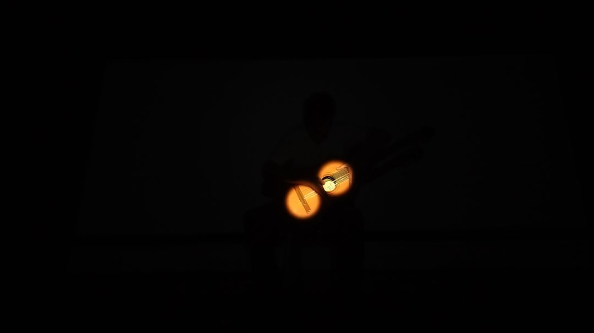

0
caios
caíram
Toca é uma peça em processo de composição, com a colaboração de e dedicada a Artur Miranda Azzi. Pedro Henrique Gilberto também performou a peça, contribuindo para o amadurecimento do processo de criação.
Trabalhando com a perspectiva da música como performance, a peça articula três principais intenções: (1) explorar o peso da guitarra e sua manipulação como material composicional orientador; (2) buscar automatizações na percepção visual, física e espacial da performance, utilizando um blackout e um sistema interativo que projeta spotlights nas mãos do performer e/ou em partes específicas da guitarra, criando e explorando expressivamente "assemblages" entre os corpos da guitarra e do guitarrista; (3) trabalhar com a ideia de 'preparação do corpo do performer' ou do espaço na produção de sonoridades.
Os registros e a partitura aqui disponíveis fazem parte do processo, ainda em desenvolvimento. O video, gravado por Pedro Aspahan, é o primeiro registro da peça. Os fotogramas são retirados de uma gravação de ensaio. Aqui você pode encontrar um pouco da sua documentação e os códigos utilizados em sua produção.
Video-Performance - clique aqui
Partitura - clique aqui

estante em posição ordinária é uma peça composta com a colaboração de e dedicada a Pedro Henrique Gilberto Alves de Souza.
A peça tem a intenção de dialogar com as tradicionais práticas de performance no violão como materiais composicionais. Abordando a contrução de discursos musicais como performance, a peça foca principalmente em relações espaciais, de fisicalidade e de corporificação. Assim, o movimento dos braços, a direção do olhar, o posicionamento do violão junto ao corpo, por exemplo, se tornam materiais importantes na constução expressiva da peça.
Video-Performance - clique aqui
Partitura - clique aqui